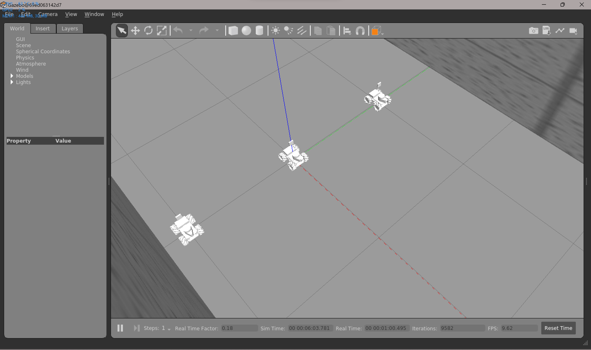
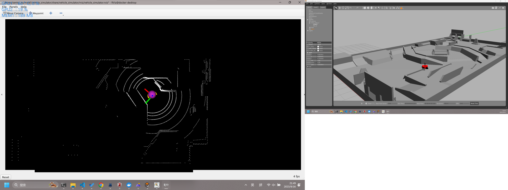

开发记录(09.15-10.31)¶
{kind=link}
{kind=link}
✅ ego_planner导航方案仿真测试¶
🗓️2023.09.24
效果不佳，还需要调试。
而且为了将三维导航适用于二维，需要带上很多其他的算法包，感觉没有必要
✅ 迁移代码至ROS1¶
{kind=link}
{kind=link}
🟩 使用FAST_LIO_LOCALIZATION¶
🗓️2023.10.01 对初始点的要求比较奇怪，配准经常失败，暂时不用这个方案
✅ Localization方案原理理解¶
🗓️2023.10.02 ICP and its variants…
🗓️2023.10.03 DLL，NDT; TODO: ACML,ACML3D,EKF,UKF…
✅ git规范文档¶
🗓️2023.10.06
✅ 为localPlanner[CMU]加入全向运动模型的支持¶
🗓️2023.09.30
localPlanner默认是差分运动模型，依照作者描述和实际跑起来的效果，localplanner的算法优先转向再前进，并且在很多算法里都需要这种调整
用差分来控制全向也未必不行，先看效果，需要的话再加入全向
localPlanner的路径是写死的，从一开始设计就没有考虑到全向的运动模型。
解决方案：1.差分转全向 2.按照localPlanner的设计思路，重写全向的localPlanner 3.接入其他的全向localPlanner算法 4.把twowaydrive改成fourwaydriver
🗓️2023.10.09/10 仿真环境内加入了对全向运动的支持，最后是按照localPlanner的设计思路，重写了全向的localPlanner按照localPlanner的设计思路，重写全向的localPlanner
进化过程
振荡版

修正版，并且保留了原作者的一些设计思路，详见代码注释和readme

加入了全向轮的twoWayDrive控制模式，可以看到如果是后侧的点会先转向

✅ coding持续集成¶
🗓️2023.09.30
教程文档在博客中更新
带有lfs管理的仓库持续集成问题会比较多，暂时还是先把大文件删除了
🗓️2023.10.03 分为开发镜像和部署镜像
🗓️2023.10.10 极客邦节点日常掉线。。。配置了更新代码自动化部署的流水线，可以将最新的代码同步并构建到用于部署的镜像上，但是由于节点掉线，无法测试，等待节点恢复后测试。
✅ 集群控制仿真环境搭建¶
🗓️2023.10.16 完成搭建

{kind=link}
✅ Docker使用文档¶
🗓️2023.10.17
✅ 月结会+新规发布¶
🗓️2023.10.18-21 读新规，PPT，进度规划
✅ far_planner导航算法仿真测试¶
🗓️2023.09.24 仿真内效果很好 

{kind=link}